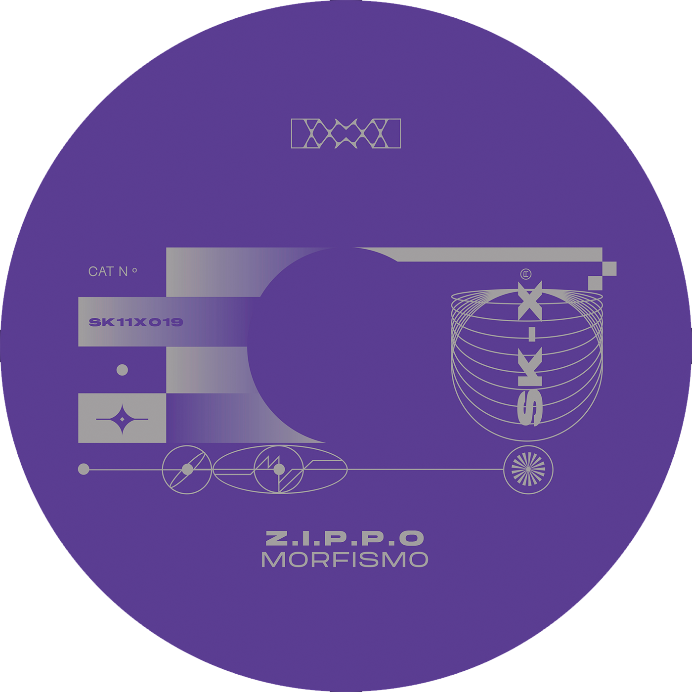

Z.I.P.P.O has been plugging away since more than 10 years in the
techno scene, experimenting his talents in all genre’s from IDM to
house to techno and always capturing the perfect aesthetic.
Here for the first time, the SK_X series welcomes him to the
expanding roster of artists. In true Z.I.P.P.O form he brings
class to the table.
Pulse and Distortion opens the 19th instalment of the series. With
its groovy metallic synth line and restrained roars throughout.
Xuro hits a little deeper with the tom’s keeping the track in
place as well as the ominous feeling over mystery surrounding the
track. The B-side opens with Vocals by Celina Marie, over layering
the mesmerizing synth sequence. Finally closing out the
outstanding debut on SK from Z.I.P.P.O is the title track
Morfismo. Ending where we started, with the drums and groove
commanding to be heard in this production, the space around with
washes of grit and texture.
A1 - Pulse and Distortion
A2 - Xukro
B1 - I Cannot Stop Thinking (Vocals by Celina Marie)
B2 - Morfismo
Mastering by Beau Thomas @ 1087 Mastering, London.
All tracks written and produced by Giuseppe Maffei.
All rights reserved SK_eleven 2023.